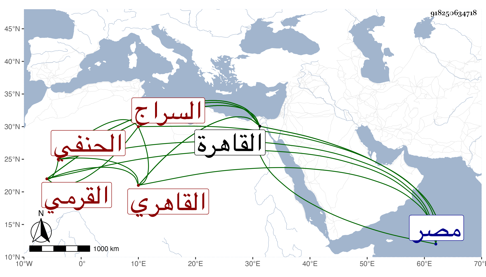

0902Sakhawi.DawLamic.ITO20230111-ara1.EIS1600.918250634718
Biography ID: 918250634718
431
عمر بن منصور بن سليمان السراج القرمي ثم القاهري الحنفي والد أفضل الدين محمود الآتي ويعرف بالعجمي ويقال له عمر فلق لأنه كان إذا أراد تأديب أحد قال : هاتوا فلق ، ترافق مع الجمال محمود القيصري بحيث كان لشدة صحبته له يظن أنه أخوه فلما ولي الجمال حسبة القاهرة قرره في حسبة مصر ثم ولي هو حسبة القاهرة ودرس بجامع ابن طولون في الفقه وبالمنصورية في التفسير وكذا ولي مشيخة الأيتمشية بباب الوزير وتدريسها من واقفها وغيرها ، وكان حسن العشرة والصلاة محمود المباشرة جميل الصورة مليح الشكل طلق المحيا قاله شيخنا في إنبائه ، زاد في معجمه : وكان مزجي البضاعة من العلم وله مهابة قرأت عليه أشياء وأنا شاب ، وكذا قال العيني أنه كان يعرف بعض العلوم ولكنه كان عريض الدعوى ولي حسبة القاهرة في دولة منطاش فتأخر بسبب ذلك عند الظاهر برقوق . مات في يوم الاثنين منتصف جمادى الأولى سنة تسع وأرخه شيخنا في إنبائه في العشر الأول من جمادى الآخرة ، وفي معجمه بجمادى الأولى وهو الصواب ولذا تبعه المقريزي في عقوده وترجمه بأنه كان حسن الصلاة يعدل أركانها ويطيل القيام في القراءة ويبالغ في الطمأنينة في ركوعه وسجوده وجلوسه مخالفا لحنفية زماننا والغالب عليه الخير وسلامة الباطن مع جمال الصورة وملاحة الشكل اجتمعت به مرارا ونعم كان بشرا وطلاقة وجه وقد تلقى عنه الإيتمشية البدر الأقصرائي ظنا وقال المقريزي أيضا : كان فقيها بارعا فاضلا مشكور السيرة في دينه ودنياه ذا عبارة وأوراد من صلاة وقراءة وصدقات والغالب عليه الخير وسلامة الباطن مع جمال الصورة والبشاشة والطلاقة تصدى للإقراء والتدريس رحمه الله .
